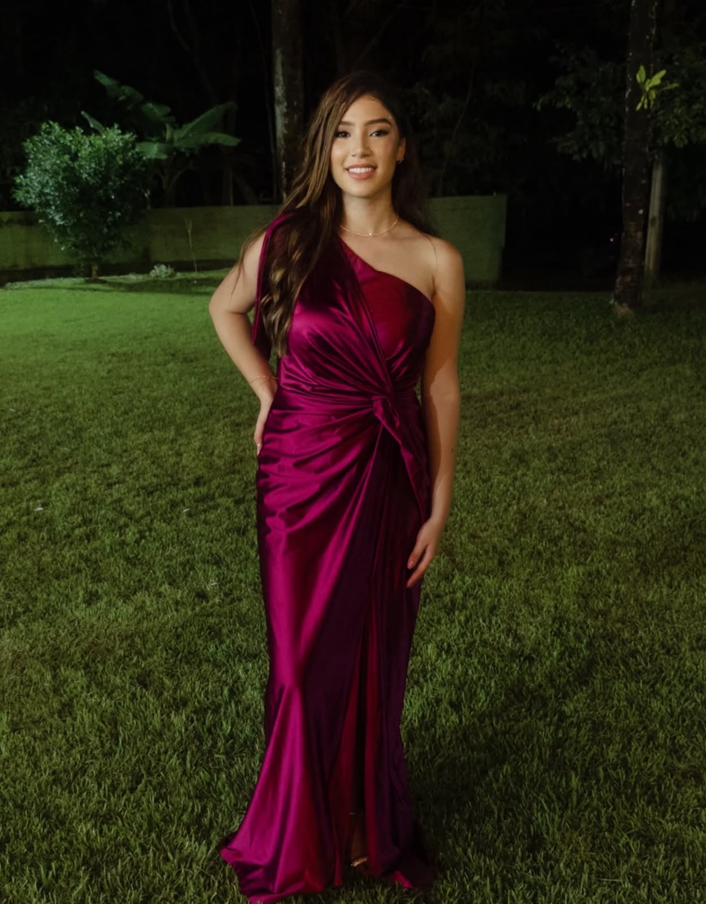
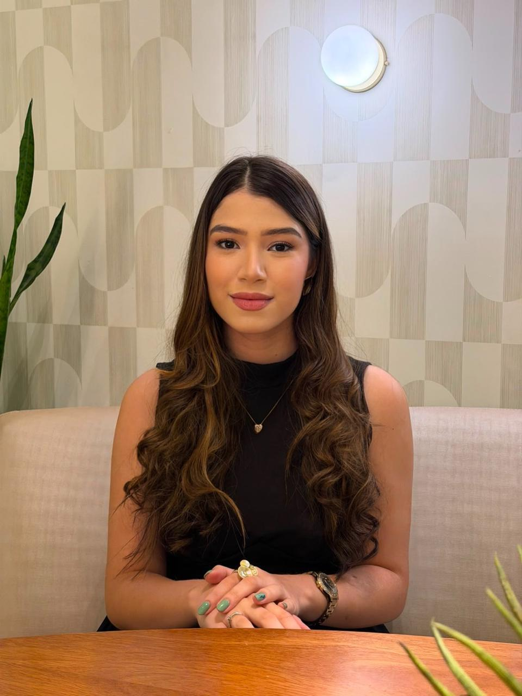
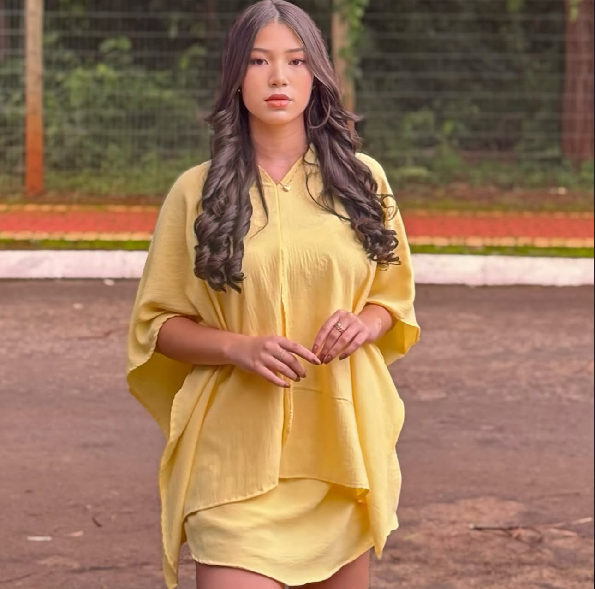

Abia
Campos


Sua marca recomendada por uma voz que a audiência realmente ouve e responde.

Pode me chamar de Abia. Tenho 18 anos e sou de Goiânia (GO). Sou criadora de conteúdo e adoro tudo que envolve moda, beleza e maquiagem — sempre em busca de um look novo pra mostrar ou uma dica pra compartilhar.
Meu dia a dia também entra no conteúdo: rotina, momentos reais e um pouco de lifestyle pra quem me acompanha se identificar. Gosto de criar de um jeito autêntico, sem perder a leveza.
Gênero · seguidores
Faixa etária
Principais países
Público majoritariamente brasileiro: 75,8% · Dados do Instagram Insights, agosto/2026. Nada estimado, nada inflado.
Um retrato do meu estilo



Últimos Reels
Últimos TikToks
- 01Stories com engajamentoSua marca entra numa conversa que já está acontecendo.
- 02Reels autênticosUm dos formatos que mais engajam. Feitos pra prender atenção até o fim.
- 03Feed com texto que conectaCarrosséis e fotos com escrita que convence. Eu também escrevo, não só gravo.
- 04Review honestoProduto em uso na minha rotina, com opinião real no meu estilo.
- 05UGC pra sua marca usarConteúdo sob medida, pronto pros seus canais e mídia paga. Direitos conforme contrato.
Do briefing à entrega
Não vendo seguidores. Vendo confiança.
De marcas queridas de Goiânia como a Boutique Cosmake e a Oh Boy! (Goiânia Shopping) a novas parcerias que topam colaborar. Só entro em projetos que fazem sentido pra mim e pra comunidade que estou construindo.
↔ Arraste para o lado para ver todas as marcas↔ Arraste para o lado ou use as setas para ver todas as marcas
Vamos conversar sobre a sua próxima campanha.
Me manda sua ideia e a gente pensa junto no melhor jeito de mostrar a sua marca — não precisa chegar com tudo pronto, só com vontade de criar algo bom.
contato@abiacampos.comRespondo em breve.